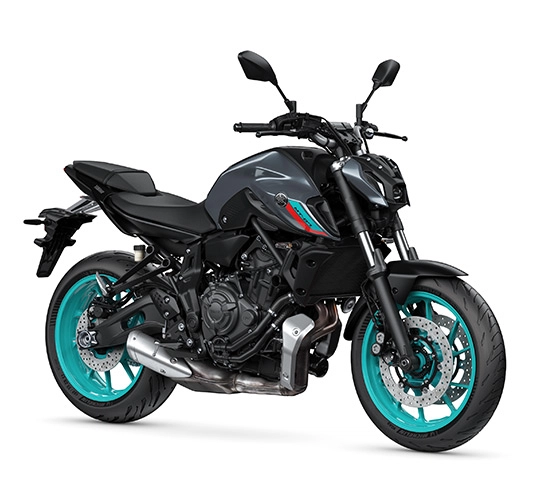

MT 07

Cilindraje 689 cc
Peso (con aceite y tanque de gasolina lleno) 184 Kg
Potencia 72.4 Hp a 8750 rpm
Torque 67.0 Nm a 6500 rpm
Tipo de motor 4 tiempos/ refrigeración líquida/ DOHC
Largo total 2085mm
Ancho total 780mm
Altura total 1105mm
Altura al asiento 805mm
Distancia entre ejes 1400mm
Distancia mínima del piso 140 mm
MT 09

Cilindraje 890 cc Peso (con aceite y tanque de gasolina lleno) 189 Kg
Potencia 117.3 Hp a 10000 rpm
Torque 93.0 Nm a 7000 rpm
Tipo de motor 4 Tiempos DOHC, refrigerado por líquido
Largo total 2.090 mm
Ancho total 795 mm
Altura total 1.190 mm
Altura al asiento 825 mm
Distancia entre ejes 1.430 mm
Distancia mínima del piso 140 mm
Peso (Con aceite y tanque de gasolina lleno) 189 Kg
Tipo de motor 4 Tiempos DOHC, refrigerado por líquido
Disposición de los cilindros 3 Cilindros en línea
Cilindraje: 890 cc
Diámetro por carrera 78.0 X 62.1 mm
Relación de compresión: 11.5:1
Potencia Máxima: 117,3 Hp a 10000 rpm
Torque máximo 93.0 Nm a 7000 rpm
Tracer 9 GT

Cilindraje 890 cc
Peso (con aceite y tanque de gasolina lleno) 220 Kg
Potencia 117.3 Hp (87,5 kW) a 10.000 RPM
Torque 93,0 Nm (9,5 kgf.m) a 7000 RPM
Tipo de motor Refrigerado por líquido, DOHC, 3 cilindros en línea, 4 tiempos, 4 válvulas por cilindro.
Largo total 2175 mm
Ancho total 885 mm
Altura total 1430 mm-1470 mm
Altura al asiento 810 mm-825 mm
Distancia entre ejes 1500 mm
Distancia mínima del piso 135 mm